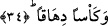
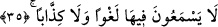

getirilmiştir. Zira kelime, “doğmak” anlamındaki “vilâdet” kökünden türemektedir.
Ragıb Isfahânî der ki: Kevâ’ib beraber yetişen yaşıtlardır. Eşitlik ve benzeşmede
göğüs kemiğine benzetilerek ve dünyaya birlikte geldikleri için böyle denmiştir.
Zâhidî Tefsiri’nde cennette kadınların on altı, erkeklerin ise otuz üç yaşında
olacakları belirtilir. Çoğu tefsirlerde cennet ehli kadın ve erkeklerin otuz üç yaşında
olacağı da dile getirilmiştir. Doğru olanı Zahidî’nin tefsirinde anlatılandır. Dolayısıyla
âyette bahsedilen kızlar on altı yaşına basmış olanlardır. Onlar, cennetteki erkeklerin
yarı yaşında olacaklardır. Öte yandan bu kızların “küûb” kelimesiyle nitelenmeleri de
bize bunu göstermektedir. Küûb kadının göğüslerinin belirip yükselmesi demektir.
Bundan maksad; onların büluğ çağına ermiş, güzellik, letafet, birlikte yaşama ve
arkadaşlık etme açısından uygunlukta kadınlığın en mükemmel noktasına ulaştıklarıdır.
Yaşları küçük değildir ki kendilerine duyulan cinsel istek zayıf olsun. Yaşları ilerlemiş
de değildir ki kendilerine duyulacak şehvet kırılıp zayıflamış olsun. Tam tersine
gençliklerinin tam doyum noktasındadırlar. Bir başka ifâdeyle gençlik suları
vucudlarından çekilmemiştir. Henüz yaşlanmamışlar ve güzellikleri değişmemiştir.
Âyette nimet olarak bu çeşit kızların zikredilmesi sebepsiz değildir. Çünkü dünyanın
düzeni, âhiretin letâfet ve hoşluğu cismânî nimet açısından ancak bunlarla sağlanır.
34. İçki dolu kâseler vardır.
Orada şarapla dopdolu kâseler vardır. “Dihâkan” ifâdesi doldurulmuş anlamındadır.
Kadehin bu şekilde vasfedilmesi, anlama bir mubâlağa ve abartı katmak içindir.
35. Onlar orada ne boş bir lâkırdı ne de yalan işitirler.
Müttakiler “orada” bahçelerin içinde “boş lakırdı ve yalan söz işitmezler.” Onlar
boş söz konuşmazlar. Boş söz anlamına gelen kelime “lağv” kelimesidir. Lağv, içinde
hiçbir fayda olmadığı için değer verilmeyen, bir kenara atılan söz demektir. Müttakiler
orada birbirlerine yalan söylemezler ki yalan da işitmiş olsunlar. Oysa dünyadakiler bir
arada oturduklarında böyle değillerdir. Özellikle içki meclislerinde hiç böyle
değillerdir. Mârifet ehli bir âlim bu âyeti şöyle anlıyor: Müttakiler orada hiçbir söz
işitmezler. Sadece haktan geleni işitirler. Çünkü hakkı yakalamış olan kimse ancak
haktan geleni işitir. Hem dünyada ve hem âhirette haktan başka hiçbir şeye şâhid olmaz.